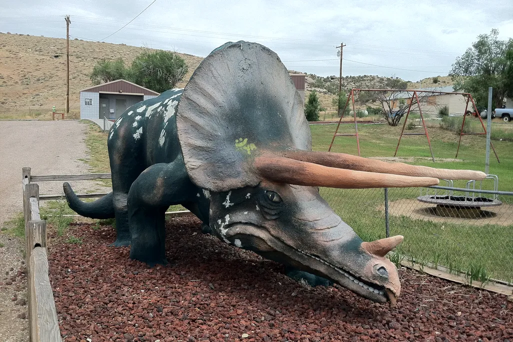

Where did this big buddy come from?
Dinosaur, Colorado is a tiny town near the Utah border that leaned all the way into its name. Along the main drag you can spot oversized dinosaur sculptures that greet travelers heading toward Dinosaur National Monument — a place famous for real Jurassic fossils set in the rock.
Roadside dinosaur statues like this one grew popular across the American West in the mid-to-late 1900s, when towns wanted playful landmarks for road-trippers. Some were cast fiberglass or concrete, painted in bright greens and browns, and planted next to motels, visitor centers, or just proudly by the highway. The sculpture in the photo is part of that tradition: a friendly, slightly goofy ambassador that says “yes, you really are in a town called Dinosaur.”
Nearby, Dinosaur National Monument protects a bone quarry where paleontologists found sauropods and other giants. So the town’s statues aren’t random cartoons — they’re a wink at the deep-time fossils that made the whole region famous. Next time you pass through, wave at the dino. It has been posing for cameras longer than most of us have been collecting stickers.
Photo shared on the Harvest board · hosted on this playground (under 2 MB).